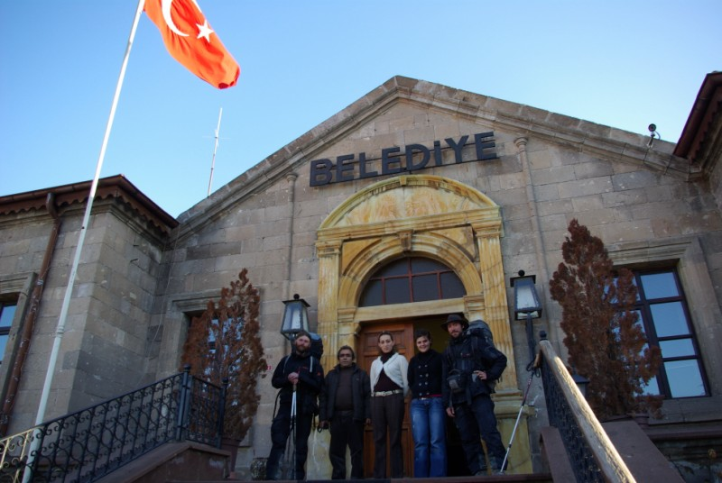

Où trouver internet en Turquie?
En Turquie, les moyens d’accéder à internet ne sont pas toujours très facile à dénicher. Il arrive cependant que la grande toile soit présente dans des villages où, aux premiers abords nous n’aurions pas espérer la trouver. Voici donc quelques endroit où vous pouvez chercher.
Internet clubs: c’est ce à quoi on pense aux premiers abords, mais on a tendance à rapidement s’orienter vers d’autres solutions après avoir traverser un village, ne voyant à priori aucune enseigne de cyber café dans les environs. Or, là aussi, il convient d’insister et d’engager la conversation avec le premier venu, surtout s’il est jeune. Les salutation de bases suivies de la phrase « Burda internet varma ? » ( Y a-t-il internet ici ? ) suffira à vous faire aiguiller vers un petit cyber café complètement caché dans un ancien appartement réaménagé où tous les gamins du village se rassemblent pendant leur temps libre pour jouer à des jeux de guerre. Le tarif varie un peu d’un club internet à l’autre, mais cela tourne aux alentour d’un YTL de l’heure.
Les mairies: Les mairies (« belediye » en turc) sont des établissement présent dans pratiquement tous les villages de Turquie. Il arrive parfois que ces établissements soient connectés à internet et, même si l’accès n’est pas disponible pour le grand public, vous pouvez, avec un peu de chance et de tchatche, obtenir l’autorisation de consulter vos mails sous l’œil vigilant d’un responsable.
Les écoles: Pratiquement chaque village dispose d’une école (« Okul » en turc) de taille correcte où quelques centaines d’écoliers se rendent quotidiennement. Or, depuis quelques années le gouvernement turc a débloqué des fonds pour équiper certains de ces établissement d’une salle informatique équipée d’internet. Bien entendu, ce matériel est destiné aux cours et n’est pas accessible au grand public, mais en vous présentant et en expliquant votre requête, il devrait être possible d’obtenir une autorisation exceptionnelle d’accéder à internet. La connexion sera sans doute censuré et vous ne pourrez peut-être pas accéder à certain site de messagerie. Pour contourner ce problème il existe un logiciel nommé “Ultrasurf” qui permet de contourner ce blocage. Il existe un autre problème: les claviers, contrairement à ceux qu’on trouve dans tout le pays, ils sont spécifique au Turc et sont très eloigné du clavier standard Qwerty. Il devient alors très fastidieux de taper de long texte. Il existe une solution là aussi, elle consiste à changer la langue du clavier dans windows, mais il vous faudra alors connaitre votre clavier français par cœur.
Les maisons de la culture: Il arrive, parfois, que les municipalités aient financé des maisons de la culture (« kültür evi » en turc) dans lesquelles ont été installés des parcs informatiques comparables à ceux des écoles avec les problèmes que ceux cités ci-dessus. L’utilisation de ces ordinateurs sont gratuit et suivant le taux de fréquentation du lieu il est possible d’y passer plusieurs heures.
Le Wifi: dans les grandes villes principalement, Il est possible de trouver des connexions wifi dans grands les hôtels ou certains cafés. Il arrive que cette connexion soit non sécurisée auquel cas vous pouvez en jouir comme bon vous semble. Dans le cas contraire vous pouvez demander aimablement le mot de passe ou commander un petit truc dans le cas d’un café. Un programme permettant de télécharger vos mails et les consulter « hors ligne » peut s’avérer être très pratique dans le cas où votre spot Wifi n’est pas dès plus confortable.